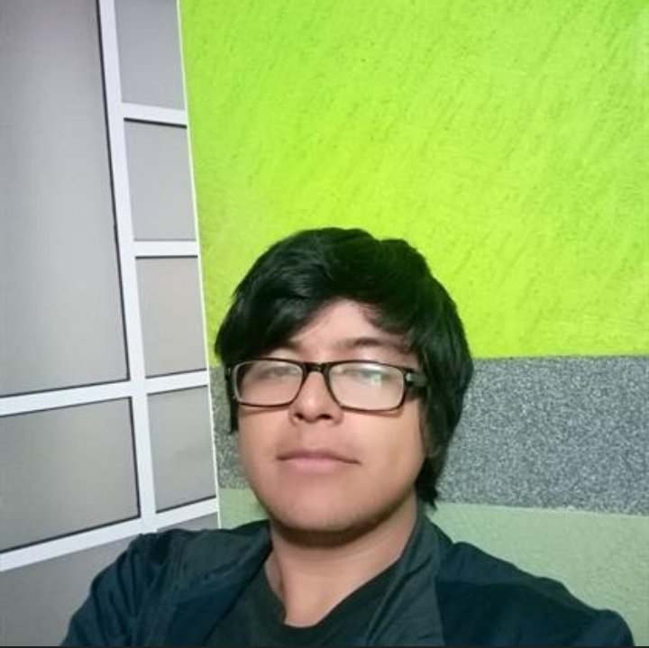

¿Quién soy yo?
Soy un esudiante de la carrera de Diseño Gráfico y voy en séptimo semestre. Estudio en la Facultad de Arquitectura de la Benemérita Universidad Autónoma de Puebla.
Soy alguien tranquilo pero explosivo a la vez, soy reservado con los demàs y no hablo mucho, trato de ser responsable con la universidad y con mis debéres familiares. Como dije antes, estudio en la universidad de la BUAP en la carrera de Diseño Gràfico, estando ya en el séptimo semestre.
- Estudiante de diseño
- Elemento 1
- Elemento 2
- Elemento 3
- Ayudante en tienda
- Ilustrador en proceso